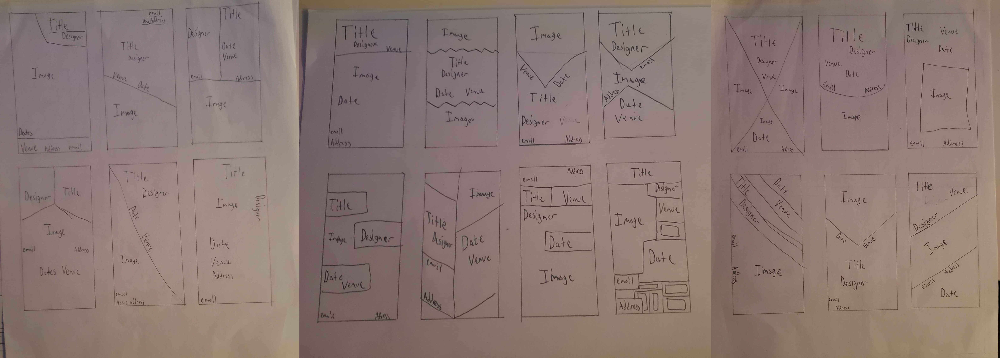
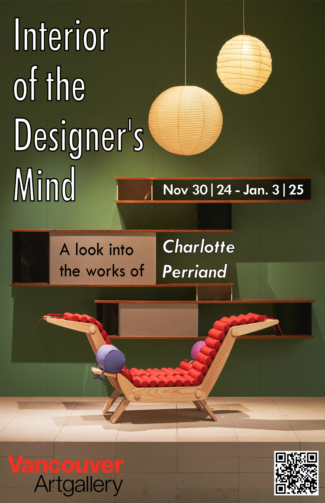

This is the final project for my Graphic Design course at SFU (IAT-102), where we were assigned with designing a poster for an event of our choice. It was primarily a solo project, but we had peer review sessions where we would get feedback from our classmates to apply each week. Using the concepts we learned over each week in the course, such as typography, negative space, and gestalt's principles, we were given a set of what info to include on the poster to organize it in a visually appealing way.

Pictured above are early sketches and ideations used to figure out layouts and potential ideas for the final poster. As this was the final project of the term, I was confident in my ability to apply the concepts we learned well, though I did struggle at first with getting the design down, mainly with integrating the info in a clear but smart way. The feedback I recieved with each draft helped a lot, and I eventually decided on a design I was happy with iterating and refining on. (Final Version below)

As for what I learned out of this project, it as well as the course as a whole taught me a lot about what fundamentals of visual design to keep in mind and how to use them effectively. More importantly these lessons can carry over into multiple other fields, such as UI/UX and web design to name a few.